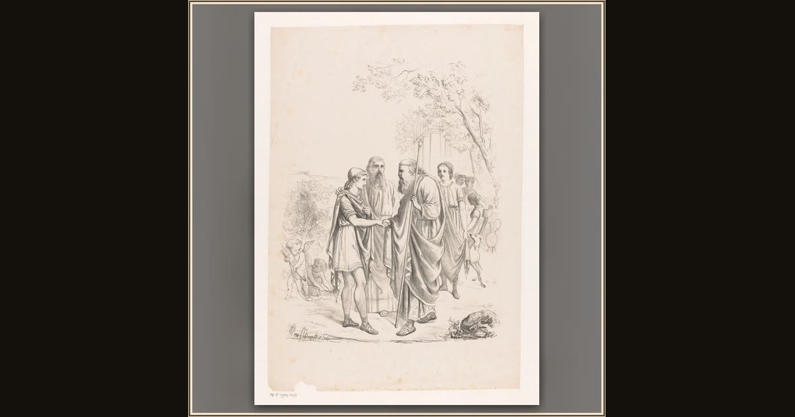

Telemachus Visits Nestor at Pylos
Anonymous (after antique) · c. 1870 · Rijksmuseum · Amsterdam, Netherlands
Young Telemachus sails to sandy Pylos to visit wise old King Nestor, hoping the kindly king can tell him where his lost father Odysseus wandered. Explore its place in Book III of the Odyssey.